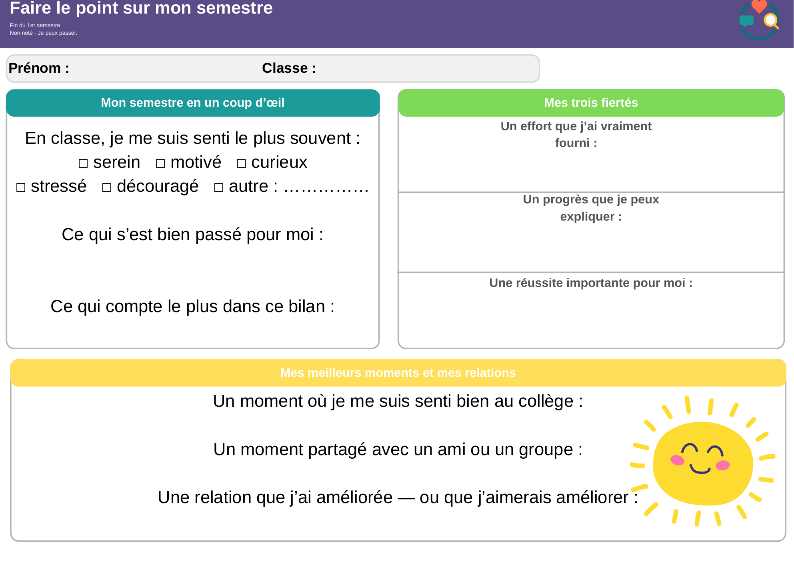
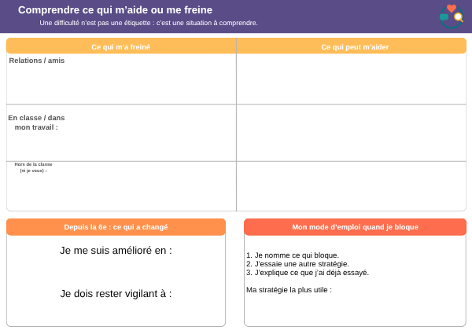
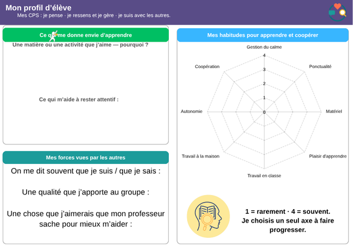
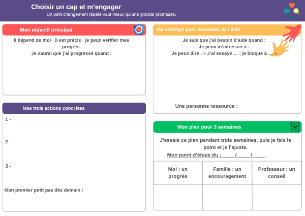

Compétences psychosociales
Bilan guidé de fin du premier semestre
Un seul document de quatre pages pour faire le point sur son semestre, comprendre ce qui aide ou freine, mieux se connaître et choisir un petit cap concret.
1 document · 4 pages recto · format A3 paysage · choisir « PDF pour impression »
1. Faire le point sur mon semestreIdentifier ce que j’ai vécu, appris et réussi.
2. Comprendre ce qui m’aide ou me freineUne difficulté est une situation à comprendre, pas une étiquette.
3. Mieux me connaîtreJe pense · je ressens et je gère · je suis avec les autres.
4. Choisir un cap et m’engagerChoisir un petit changement concret à répéter.
Aperçu du document complet



